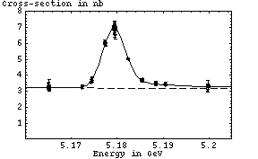

Fit parameters:
Chi^2 / dof = 91.89 / 86 = 1.069 |  |
Otherwise, the runs used in this fit are exactly those hilighted in the run info list.
(Parameters are ordered: area, mean, sigma, background)
This is the one Y(3s) scan with a high-energy tail point.
run<tab>energy<tab>xc<tab>xc_err ----------------------------------- 122536 5.19045 3.4 0.06 122537 5.17431 3.59 0.06 122538 5.18236 5.03 0.07 122539 5.1724 3.23 0.06 122540 5.18535 3.68 0.06 122541 5.18846 3.56 0.06 122542 5.17743 5.92 0.09 122545 5.19046 3.4 0.06 122546 5.17451 3.74 0.17 122548 5.17449 3.77 0.07 122549 5.1824 5.04 0.07 122550 5.17246 3.34 0.06 122551 5.18554 3.75 0.06 122555 5.18845 3.56 0.07 122556 5.17739 6.14 0.1 122557 5.19046 3.49 0.07 122559 5.17432 3.57 0.06 122560 5.18237 5.04 0.08 122562 5.18548 3.67 0.07 122563 5.18843 3.41 0.06 122564 5.17742 5.99 0.08 122567 5.19968 3.41 0.27 122568 5.19968 3.27 0.06 122569 5.19965 3.04 0.06 122570 5.19968 3.31 0.05 122571 5.19968 3.34 0.05 122572 5.19967 3.31 0.05 122573 5.19968 3.39 0.05 122574 5.19974 3.27 0.06 122575 5.19975 3.34 0.06 122585 5.16514 3.28 0.05 122586 5.16517 3.16 0.05 122587 5.16517 3.23 0.05 122590 5.16519 3.16 0.05 122593 5.16519 3.24 0.08 122594 5.16516 3.16 0.07 122595 5.16516 3.26 0.15 122596 5.16518 3.23 0.06 122599 5.16519 3.1 0.1 122600 5.16518 3.54 0.21 122602 5.16518 3.14 0.05 122603 5.16519 3.17 0.05 122604 5.16524 3.29 0.05 122605 5.16531 3.19 0.05 122606 5.16528 3.31 0.09 122576 5.17934 7.04 0.17 122577 5.17936 7. 0.09 122578 5.17952 7.02 0.32 122579 5.17939 7.09 0.16 122608 5.17937 6.95 0.08 122610 5.1794 6.83 0.07 122613 5.17939 7.1 0.13 122614 5.17942 6.93 0.07 122615 5.17942 6.95 0.07 122616 5.17942 7.07 0.07 122617 5.17938 7.03 0.08 122618 5.17942 6.93 0.07 122619 5.17942 7.01 0.07 122620 5.17942 7.01 0.07 122622 5.17944 6.61 0.22 122623 5.17945 6.89 0.1 122625 5.17945 7.01 0.08 122626 5.17942 7. 0.07 122627 5.17942 7.15 0.27 122628 5.17942 6.95 0.14 122629 5.17942 7. 0.07 122630 5.17943 6.97 0.07 122631 5.17939 6.82 0.14 122632 5.17949 7.09 0.13 122634 5.17952 7.1 0.11 122640 5.17949 6.88 0.09 122641 5.17952 6.89 0.07 122642 5.17952 6.98 0.07 122643 5.17949 6.9 0.07 122646 5.17949 7.03 0.1 122647 5.17952 6.94 0.11 122648 5.17949 6.95 0.1 122649 5.17952 6.97 0.07 122650 5.17955 6.92 0.07 122653 5.17954 6.99 0.07 122654 5.17952 6.83 0.07 122657 5.17954 7. 0.09 122658 5.17952 6.81 0.11 122661 5.17952 6.99 0.12 122665 5.17954 6.93 0.08 122667 5.17952 6.9 0.1 122668 5.17955 6.56 0.28 122669 5.17954 6.81 0.24 122672 5.17954 6.83 0.07 122673 5.17957 6.91 0.07
Jim Pivarski <mccann@mail.lns.cornell.edu>
Last Modified: Friday, January 18, 2002